Ruta de la entrevista
01
Apertura
Toda buena entrevista comienza generando confianza.
Generar confianza y bajar la tensión inicial del candidato.
◷ 3 min
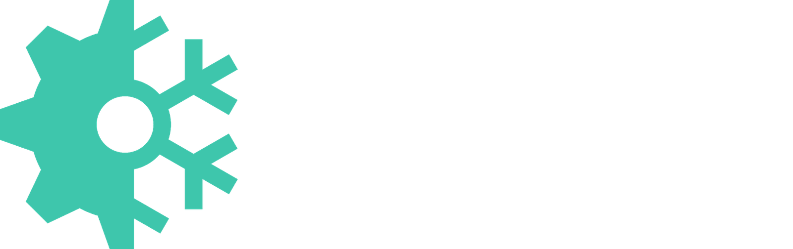
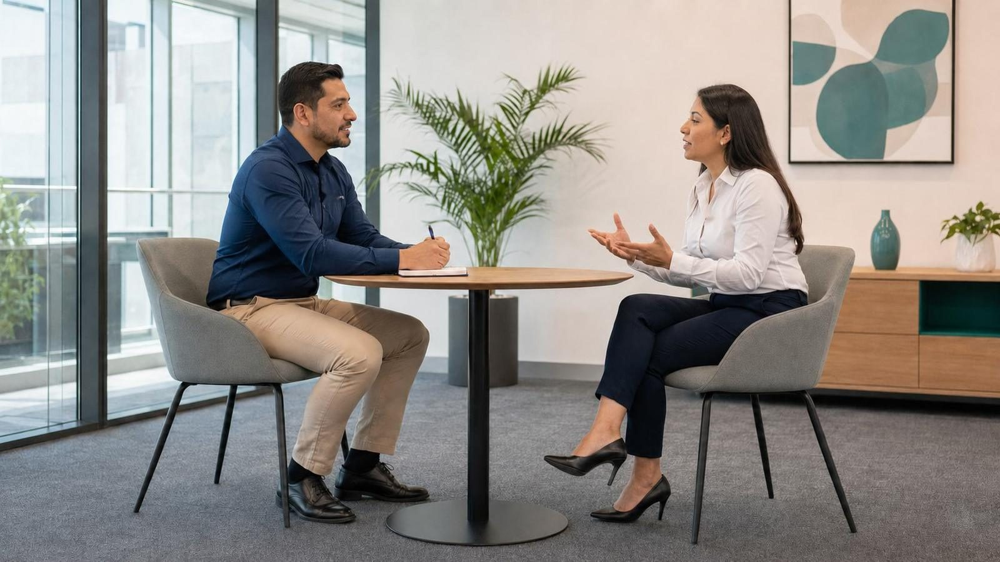
Cada contratación que apruebas define, por meses o años, al equipo que vas a liderar.
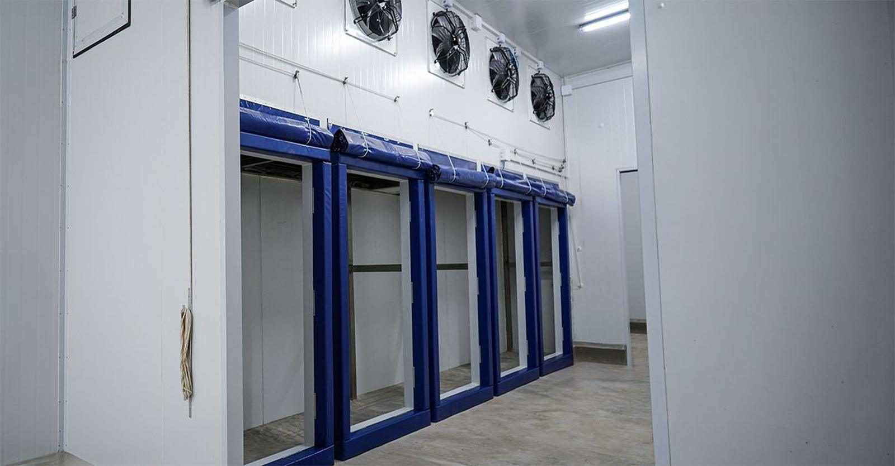
Un CV puede describir cualquier logro. La entrevista es el momento en que la jefatura confirma si esa experiencia es real, en qué nivel se domina y qué resultados produjo.
Preguntas que piden evidencia concreta, no respuestas generales.
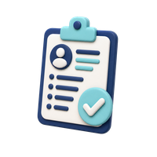
Confirmar qué hizo el candidato realmente, no solo qué dice haber hecho.
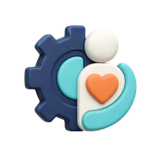
El conocimiento importa, pero también cómo se relaciona con el equipo.
Una decisión bien explicada facilita el trabajo de Capital Humano.
Explora cómo evolucionó la forma de entrevistar y evaluar talento.
Procesos rígidos y jerárquicos, con poco espacio para preguntas del candidato.
AhoraProcesos más conversacionales, con espacio real para preguntas del candidato.
El foco estaba casi solo en el conocimiento técnico.
AhoraSe evalúan también habilidades blandas, adaptabilidad y propósito.
Cada generación trae una forma distinta de entender el trabajo. Conocerla ayuda a adaptar el tono de la entrevista, no a encasillar a la persona.
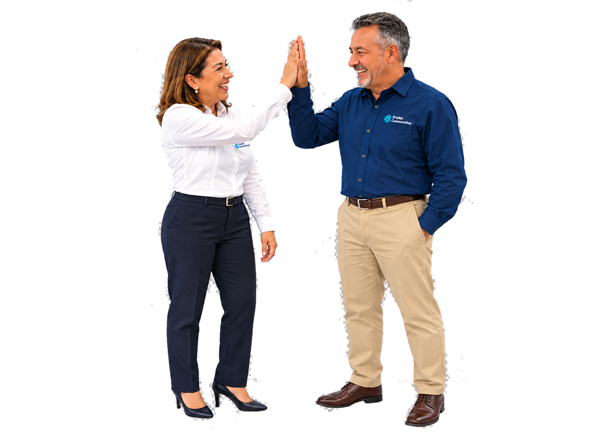
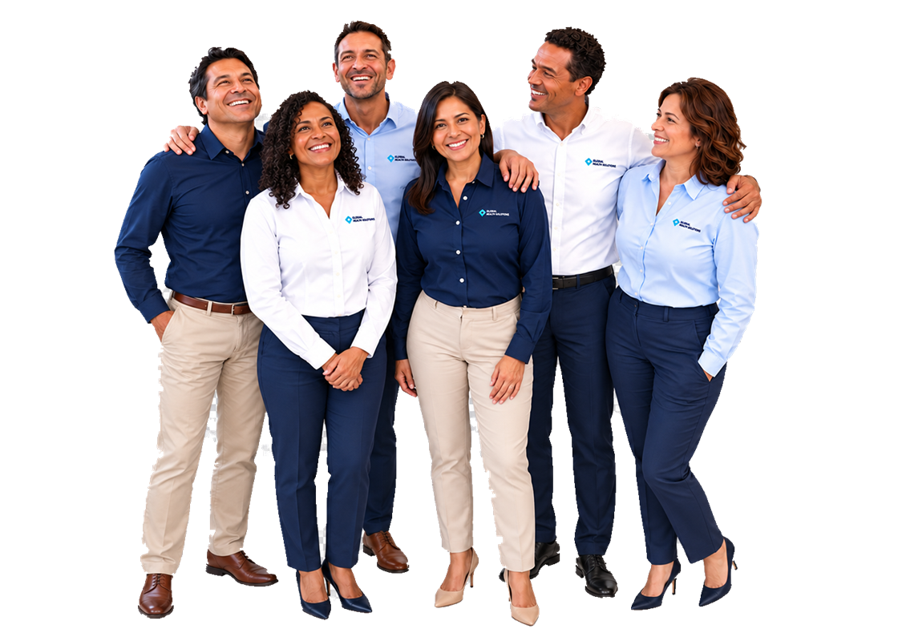
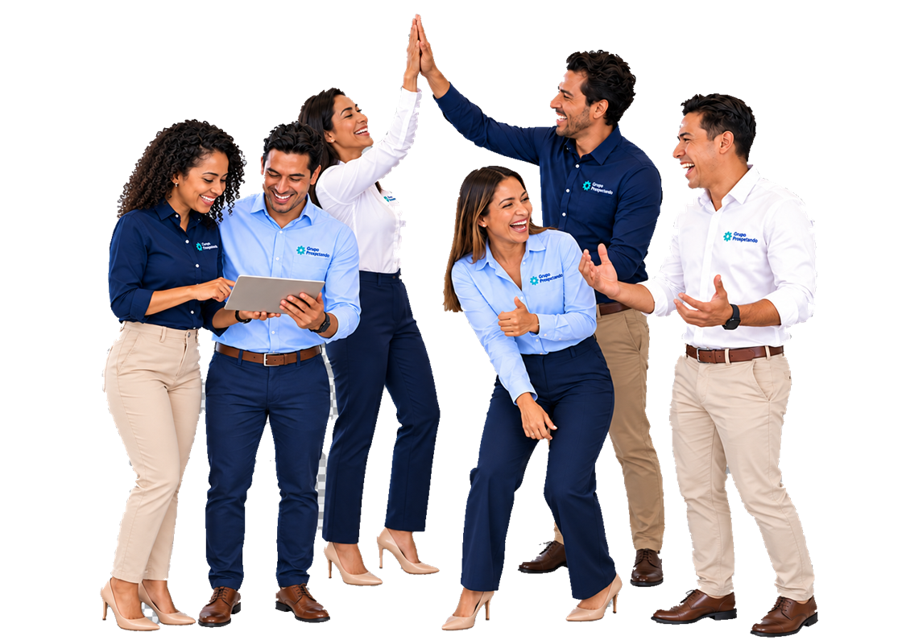
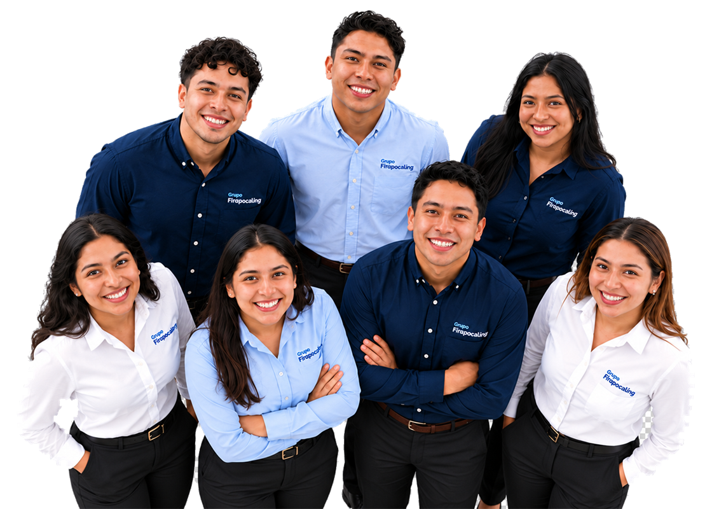
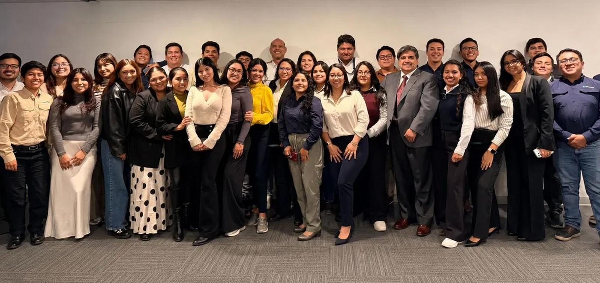
Cinco competencias que ayudan a evaluar con el mismo criterio a cualquier candidato, sin importar el puesto.
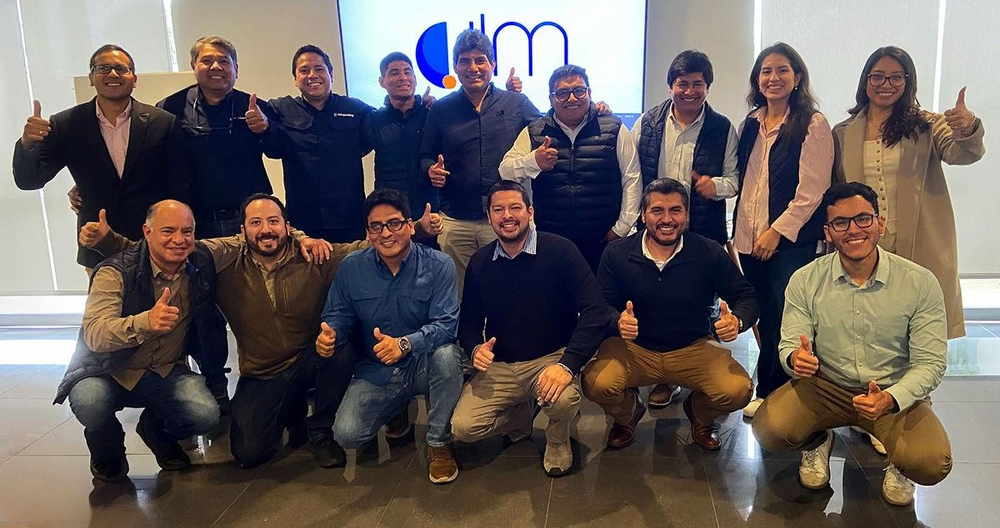
Capital Humano valida el perfil general. La jefatura valida si el candidato responde a las exigencias reales del puesto y del equipo, en tres momentos.
Toda buena entrevista comienza generando confianza.
Generar confianza y bajar la tensión inicial del candidato.
Antes de preguntar, ayuda a la persona a entender quién la escucha.
Situar al candidato: quién eres, el área y el objetivo de la entrevista.
El currículum enumera hechos; la conversación revela lo que hay detrás.
Confirmar el nivel real de experiencia frente a lo que dice el CV.
Saber no es repetir conceptos: es demostrar cómo se aplican.
Comprobar si domina las funciones críticas del puesto.
Las experiencias pasadas muestran cómo una persona actúa cuando el reto es real.
Conocer cómo actuó el candidato en situaciones reales pasadas.
La capacidad importa; la motivación indica hacia dónde quiere avanzar.
Validar interés real, disponibilidad y expectativas del puesto.
Una entrevista también es el espacio para que el candidato elija.
Dar espacio al candidato para resolver sus propias dudas.
Una buena experiencia termina con claridad, respeto y próximos pasos.
Cerrar con claridad, sin generar falsas expectativas.
Sirve para conocer cómo actuó el candidato en situaciones reales. No preguntes qué haría en teoría — pregunta qué hizo. Toca una tarjeta para ver el detalle.
Explora preguntas clave para orientar una entrevista más profunda.
No se encontraron preguntas con ese criterio. Prueba con otra palabra o categoría.
Identifica cuándo detenerte, profundizar o buscar más contexto.
Una señal aislada sirve para profundizar, no para descartar automáticamente.
Todos los entrevistadores estamos expuestos a estos sesgos. Reconocerlos es el primer paso para prevenirlos.
Entrevistar bien no significa hacer muchas preguntas. Significa hacer las preguntas correctas.